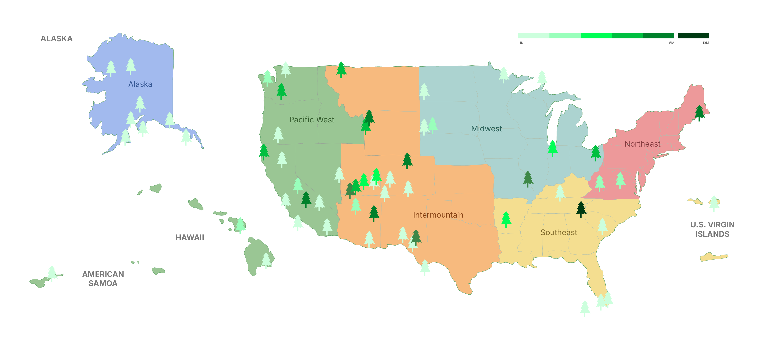
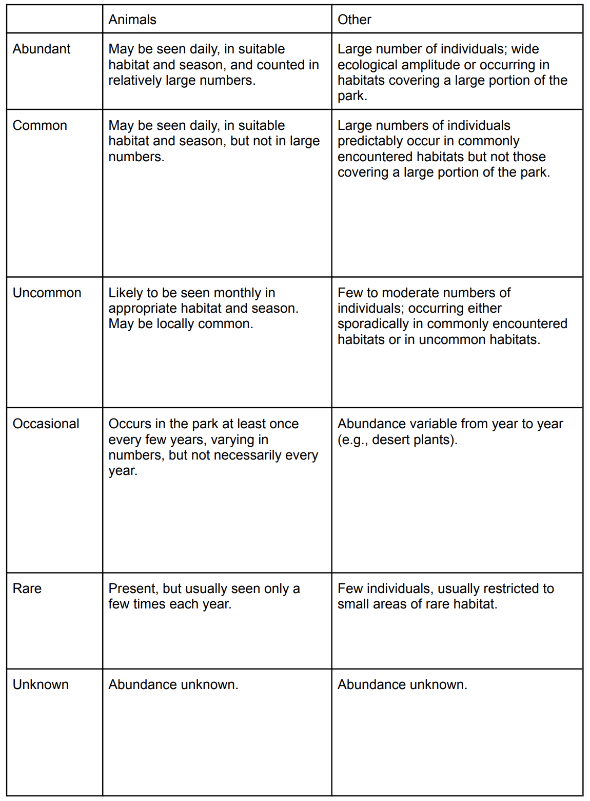

Introduction.
Welcome to our exploration of U.S. national parks, where we dive into their two core dimensions: visitation and biodiversity. Through interactive visualizations, this project showcases how millions of visitors engage with these parks each year and highlights the incredible diversity of species they protect. Whether you’re curious about the most visited parks or the species that make each park unique, this website offers a detailed look into the numbers and trends that define these treasured landscapes.
Background.
National parks in the United States serve as both popular tourist destinations and critical conservation areas. These parks span diverse ecosystems—from arid deserts and lush forests to expansive wetlands and remote islands—each harboring unique species. To examine biodiversity, this project relies on the NPSpecies database, a comprehensive resource documenting species occurrences across the National Park Service system. By combining this biodiversity data with visitation metrics, the project offers an insightful look into the individual and regional characteristics of U.S. national parks, celebrating their dual roles in recreation and preservation.
Overview Map: Regions, National Parks, and Visitation
The National Park System is a treasure of the United States, and for a good reason. Spanning vast landscapes and unique ecosystems, these parks are a testament to the country’s geo and bio scene. The location of national parks can be divided into six regions: Alaska, Pacific West, Intermountain, Midwest, Southeast, and Northwest. Take a look at the map to see which states fall in which regions, and the distribution of the national parks (indicated by the tree icons) across the country. Using color, the tree icons also represent visitation levels across various national parks within each region. The darker green trees signify higher visitation numbers, while the lighter green trees indicate lower visitation.
There are more national parks in the western part of the country, as the tree icons are much more dense on the left of the map. Specifically, California and Utah are the leading states to host the most national parks. There is also a great variety of visitation across parks in Utah, so some of them are more popular than others. Which national parks exactly? Can you recognize any of the national park names? Scroll down to find out more information!
Visitation of National Parks by Region in 2023
This treemap visualization represents the visitation of U.S. national parks by region in 2023. The size of each block corresponds to the total number of visitors a park received during the year. Parks are grouped and color-coded by region, providing a comparative view of their popularity. It allows for quick identification of major tourism hubs and underutilized parks.

🏔 Great Smoky Mountain Peaks above the Clouds
The Great Smoky Mountains National Park stands out with the darkest glyph and the largest block, indicating it had the highest visitation in 2023. The popularity of this park stands out so drastically from the rest of the park that we indicated it with a standalone darker green – its central location and accessibility likely contribute to its popularity.

🤩 Western Region Reigns Supreme
Parks in the western region, such as the Grand Canyon, Zion, Yellowstone, and Rocky Mountain, occupy significant space in the treemap, showing their high visitation numbers. This indicates that the western region remains a hotspot for park tourism. The Alaska Region occupies only a small area of the treemap, and despite having multiple national parks in that region, all of them have low visitation, as the region is definitely a unique hidden gem.
National Park Visitation Race 2014-2023
This animated racing bar chart highlights the top 10 most visited national parks over the past decade, displayed on a timeline. As visitation numbers fluctuated, the rankings of these popular parks shifted accordingly.
👋 Drag the small arrow on the timeline to pause at any specific point between 2014 and 2023.
👋 Use the Pause button located at the bottom-left corner of the graph to stop the timeline.
🤩 Great Smoky Mountain Champions the Visitation for 20 years
Not only in 2023, the Great Smoky Mountain has been the top 1 most popular park in the US for the past 20 years. It’s worth noting that visitation patterns may also be influenced by the size of the parks. Larger parks might attract more visitors due to their capacity to offer diverse attractions and accommodate large crowds. This could partially explain why some parks consistently rank among the top visited, despite fluctuations in overall visitation trends.
💥 COVID and Post-COVID Activities
Before 2019, visitation trends were relatively stable, with a steady, linear growth in the number of visitors. However, starting in 2019, the onset of the COVID-19 pandemic led to a sharp decline in visitation across all parks along with significant ranking changes. It might be because different areas of the country were affected by the pandemic sooner or later, and there were corresponding policies regarding the visitation of national parks, which affected people’s decision to go outdoors or self-quarantine at home. By mid-2020, visitation numbers began to recover (as with the rest of the activities happening across the board), while ranking shifts still happened and were much slowed.
Now that we’ve seen where visitors go, let’s shift focus to why these parks matter – their role in conserving biodiversity.
Regional Distribution of Biodiversity - Map View
The map demonstrates the geographical distribution of all the national parks in the United States and their level of biodiversity. Each circle represents a national park, color indicates different states and the size of the circle represents the number of species within that park.
👋 Click on a dot on the map if you want to find out about the name of the National Park and its number of species.

🤩 Western US Dominance
Many of the largest circles, representing parks with high biodiversity, are concentrated in the western United States (e.g., California, Arizona, and Utah). This suggests that western parks, often larger and more ecologically diverse, host a greater number of species.
🧬 State Biodiversity Champions - California, Hawaii
Multiple parks in California show relatively large circles, indicating high biodiversity. Parks like Yosemite, Sequoia, and Redwood likely contribute significantly to the state’s ecological richness.
The parks in Hawaii, though geographically isolated, show moderately sized circles. This indicates that while isolated ecosystems in Hawaii host unique species, their total numbers may be more limited compared to larger mainland parks.
Regional Distribution of Biodiversity - Sunburst View
This is a sunburst chart showing the organizational structure and regional grouping of U.S. national parks. The visualization divides the parks into regions (e.g., Pacific West, Intermountain, Southeast, Alaska, etc.), with each region further broken down into individual parks. The chart provides a hierarchical view, starting from the broader regional level at the inner circle and moving outward to specific parks. You can use this sunburst chart to complement the map view to discover more organizational and hierarchical insights.
👋 Hover over the sunburst to see the biodiversity of each region, state, and national park. Click on the inner ring of regions to zero in on information in the region you chose. Or, click on the middle ring of states to zero in on information regarding all the national parks in that state.
🤩 California’s Dominance in the Pacific West
California leads the Pacific West Region with a remarkable variety of national parks, including Yosemite, Redwood, and Joshua Tree. These parks boast diverse ecosystems, ranging from towering redwoods to arid deserts, making California a standout for both biodiversity and tourism.
🤩 Great Smoky Mountains’s Standout in the Southeast
The Southeast region has fewer parks, but the Great Smoky Mountains National Park shines with its status as the most visited park in the U.S. and a biodiversity hotspot, which highlights its importance in the national park system.
U.S. National Parks categorize the species into different categories. Let’s see if we can discover anything interesting with these distinctions!
Ranked Number of Species Categories
This bar chart ranks the number of species within one or multiple categories for each national park in the U.S. The parks are organized in descending order based on the count of selected species documented. The color coding corresponds to the regions in which the parks are located (e.g., Pacific West Region, Southeast Region, etc.), providing a clear connection between species diversity and geographic distribution.
We have the ability to filter by different species categories (e.g., mammals, birds, plants), which makes the chart dynamic and allows for comparisons across various groups of species.

🤩 Regional Biodiversity Winners - Pacific West, Southeast, and Intermountain
Pacific West Region dominates in species diversity across multiple categories, with parks like Death Valley, Redwood, and Yosemite frequently ranking at the top. This underscores the ecological richness of the region, likely due to its varied ecosystems (deserts, forests, and mountains).
Southeast Region has parks like the Great Smoky Mountains, which consistently rank high in categories like vascular plants, emphasizing their biodiversity significance.
Intermountain Region, featuring parks such as Grand Canyon and Yellowstone, showcases strong rankings for mammals and reptiles, highlighting its unique arid and mountainous ecosystems.
🐦 Birds
Death Valley and Redwood are ranked first and second in bird species diversity, suggesting their importance as avian habitats. This is noteworthy given their contrasting ecosystems: desert in Death Valley and dense forests in Redwood.
🦌 Mammals
Death Valley again leads in mammal species, emphasizing its ability to support a surprisingly rich diversity of life despite its harsh environment. Other notable parks include Yellowstone and Great Basin.
🌿 Vascular Plants
The Great Smoky Mountains dominate this category, showcasing their dense and varied flora. Redwood also ranks highly, reflecting the significance of its towering forest ecosystems.
🐊 Reptiles
Parks like Grand Canyon and Saguaro excel in this category, likely due to their hot, arid climates that support reptilian species.
Interesting to observe trends in the biodiversity across all species in all national parks in the US. What if we focused on 5 animal species (Birds, Mammals, Reptiles, Fish, and Amphibians)? Will we unlock any specific insights with this streamlined scope?
Top 10 Parks Species Distribution
On the left of this Sankey Diagram, the national parks are listed along with a number next to each park, representing the total species found in that park. On the right, different species categories are listed (e.g., birds, mammals, reptiles, fish, and amphibians) along with the total count for each category across all parks. The thickness of the connections (or flows) between the parks and species categories represents the proportion of species in that category relative to the park.
🤩 Dominance of Bird Species
Birds are the most represented category across all parks, with 3,143 total species. This suggests birds are a common and diverse group in national parks. And it also suggests that birdlife is a key ecological feature.
🤩 Mammals as the Second Largest Group
Mammals, with 803 species, form the second most prominent group across the parks, followed by reptiles (260), fish (354), and amphibians (150).
🤩 Biodiversity Hotspot - Great Smoky Mountains, Grand Canyon
The Great Smoky Mountains National Park and the Grand Canyon National Park both show significant connections to all species categories, with 582 and 683 total species, emphasizing their status as a biodiversity hotspot.
Species Categories in National Parks
This viz displays the distribution of documented species across five focused species categories (Bird, Mammal, Fish, Retile, and Amphibian). While this default view displays the distribution of these selected species across all states.
👋 You can interact with the dropdown to focus on a specific state you are interested in.
🔭 Birdwatchers Celebrate!
In the overall view, we can see that birds are the most documented species across all parks, averaging around 200-300 birds. There is also a greater variance across the birds dataset, as the dots are more spread out compared to the other species.
🏊 Swimming Through the Ranks
Though the other species categories bundle close to the zero-end of the spectrum, it is interesting to point out that fish have a few outliers that far exceed the number of most documented birds in a state. If we hover over these two points, we can see that these parks are from American Samoa and Florida, which are areas both surrounded by water.
With that in mind, how about we take a closer look into what biodiversity looks like on a smaller geographic scale – for instance, how will these insights that we discovered across all national parks compare to the biodiversity of national parks in California? In fact, California is one of the states that has the highest number of national parks in the U.S.! First, let’s look at which national parks reside within California on the following map.
National Parks in California
This visualization maps all six national parks in California, showcasing their locations. We can explore more details about each park by hovering over its logo on the map.
👋 Hover or click on one of the park logos to see additional information of that park.
🤩 Guide for the California explorer
Focusing on a single state provides a clearer understanding of the geographical distribution of California's national parks. Additionally, the visualization offers basic information for each park, including its official website, estimated area size, establishment date, and the most recent visitor statistics from 2023. The map serves as an accessible tool for those we need to quickly obtain essential details and easily navigate to external resources for further exploration.
Biodiversity of National Parks in California
This viz displays the biodiversity of the 7 national parks in California, specifically regarding the spread of 5 species categories (birds, mammals, reptiles, amphibians, and fish). Here, we can see which parks have the most/least documentation on the species that reside in the park, seeing how each park ranks in biodiversity.
🌎 Birds continue to fly high, while fish swim fast alongside
Birds are the most well-documented species by a significant margin for most parks across California. While mammals come in second place for most parks, that is not the case for the top 2 biodiverse parks (Channel Islands and Redwood) in which fish come in second. These trends closely follow what we show in a prior visualization, Species Categories in National Parks, in which birds come out as the most documented species across all national parks, while two fish data points stand out as outliers.
Now that we’ve looked into the distribution of biodiversity across all species categories at different levels, let’s zoom back out and introduce two new variables: nativeness and abundance.
Nativeness Proportions of Species: Ranked
This stacked bar graph hierarchically ranks the distribution of species nativeness across each park. Nativeness refers to whether or not a species is naturally occurring in that specific park, meaning a non-native species exists in that park due to deliberate or accidental human activities.
👋 The default view is ranked by the percentage of non-native species from high to low. Click on the next panel of the StoryPoint to see the data ranked by the percentage of native species.

Overall, there are more native species than non-native species across the board. Let’s dive into the data a bit more and look at which parks have a higher or lower nativeness ratio.
🏖 Effects of visitation on Hawaii’s ecosystems
In regards to non-nativeness, the two national parks in Hawaii (Hawaii Volcanoes National Park and Haleakala National Park) are ranked the highest. This proves true as Hawaii experiences high levels of tourism and, according to NPS, the influx of humans on the islands of Hawaii also brings over invasive species that threaten the population of native species, which also explains why the ratio is skewed in this way.
⛄ Isolated, but protected, Alaska
In regards to nativeness, the viz shows that the top 2 parks are both from Alaska, which makes sense as Alaska is fairly isolated in comparison to other national parks located within North America and is on the polar end of the spectrum when it comes to visitation, as shown in our visitation treemap.
Species Abundance Per Region
This stacked bar showcases the distribution of biodiversity abundance across different regions, highlighting counts of various species or categories.

This viz showcases not only the number of documented species per region, but also highlights how many species fall under which abundance status. Abundance status ranks from Abundant to Unknown, and these statuses can symbolize different looks into different species. NPS differentiates these definitions between Animals (Birds, Mammals, Amphibians, Insects, Reptiles, Crabs/Lobsters/Shrimps, Slug/Snails, Spiders/Scorpions) and Other (Plants, Chromista, Protozoa, and Fungi), and below shows how NPS explains each status as the following:

🤩 Southeast region displays high volume, but exposes empty volume
The Southeast region ranks the highest in documented species, but we noticed that a majority of the documented species unfortunately have unknown abundance statuses. While compared with the other regions, this region only stands in third for the most recorded known statuses, falling significantly below the top two regions.
👋 If you click on “Insects”, you will see that it engulfs the majority of the unknown species in the Southeast region as it largely reflects the trend we see when “All” is selected as well. We hypothesize that insects may be more difficult to document in comparison to larger species, such as birds and mammals, and this may be the reason behind why this region largely sports unknown status in their documented species.
🤩 Pacific West reigns supreme in known status documentation
On the other end of the spectrum, the region that has the most documented species with known abundance status is the Pacific West region. Though the Pacific West stands in 3rd place for the number of documented species, the ratio between known statuses vs. unknown statuses is the greatest.
Species Abundance & Nativeness in Regions
This bubble chart visualizes the abundance and nativeness of species in U.S. national park regions, segmented into native and non-native species for each region. The x-axis represents regions (e.g., Northeast, Alaska, Southeast, etc.), while the y-axis shows the abundance of species. The size and color of the bubbles indicate abundance status.

🤩 Abundance leaders - Pacific West Region, Intermountain Region
The Pacific West Region and the Intermountain Region show the highest overall species abundance, particularly for native species, with numerous “abundant” and “common” bubbles. This underscores its rich biodiversity and effective habitat support.
🤩 More Native species with spread out circles
In general, the native species still dominates in all national parks and it has more spread out circles indicating a wider range of abundance statuses from “rare” to “abundant.” This suggests that native species occupy diverse ecological niches, with some species thriving in large numbers while others are less commonly observed. On the contrary, non-native species tend to cluster in the lower abundance categories, reflecting their limited establishment within the parks.
🤩 Redder ends reach surprising heights
Overall, there are fewer records of the “greener” end of the spectrum (“abundant” to “uncommon”) as opposed to the “redder” end of the spectrum (“occasional” to “unknown”).
👋 Use the Category filter on the right to look at the category of species you are interested in. If you click on Bird, you will find there is a large variation between Native vs. Non-native species. There are much more native birds than non-native birds, and the native ones have more varied abundance levels. If you click on Amphibian, notice how two of the regions – Northeast and Midwest – don’t have any non-native amphibians recorded.
National Parks Exploration
Finally, here is an overview of all the types of species in each region, state, and national park. Click on any dot on any hierarchy on the radial visualization to zoom in on any parts you are interested in!
Conclusion
In our project, we designed data visualizations generated by datasets provided by the National Park Service (NPS) to look deeper into the dimensions of national parks, and how the variables compare, connect, and interact with one another. With each visualization, we were able to discover trends across all parks and specific insights from streamlined perspectives, as well as interesting outliers. Additionally, we invite you to interact with certain visualizations to uncover how we discovered certain insights, as well as encourage you to discover insights of your own.
In a time where the rise of technology pushes us to spend more time online and indoors, we inspire you to venture outside and visit a national park! They are an invaluable resource for wildlife preservation and provide a glimpse into a protected world we should strive to protect.